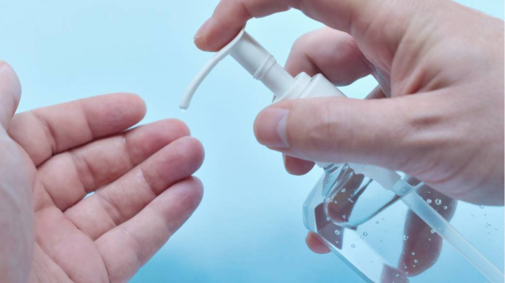

Alcohol-based Hand Sanitizer
- Alcohol-based hand sanitizers can quickly reduce the number of microbes on hands in some situations, but sanitizers do not eliminate all types of germs
- Hand sanitizers may not be as effective when hands are visibly dirty or greasy.
- Hand sanitizers might not remove harmful chemicals, like pesticides and heavy metals, from hands.
- When using hand sanitizer, apply the product to the palm of one hand (read the label to learn the correct amount) and rub the product all over the surfaces of your hands until your hands are dry.
Information and picture source www.cdc.gov